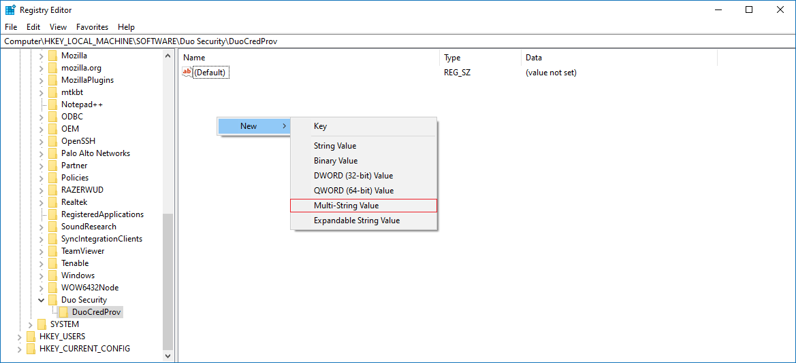
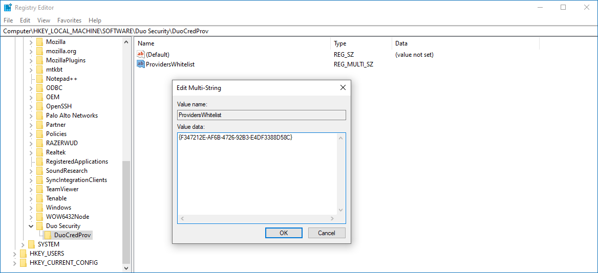

Question
How to set up Netwrix Password Policy Enforcer to work with Cisco DUO Authentication?
Answer
Refer to the following steps to set up Password Policy Enforcer with Cisco DUO Authentication in a client:
-
In the client, open Registry Editor and follow the specified path:
Computer\HKEY_LOCAL_MACHINE\SOFTWARE\Duo Security\DuoCredProv -
Check if you have the ProvidersWhitelist value available in the key. If not, right-click the DuoCredProv key, and select New > Multi-String Value. Name the value ProvidersWhitelist.
 -
Once created, right-click the value and select Modify. Input the Password Policy Enforcer Client GUID in the Edit Multi-String window:
{F347212E-AF6B-4726-92B3-E4DF3388D58C} -
Save the changes, and reboot the client to verify the changes.
Learn more in Can I enable other credential providers after installing Duo Authentication for Windows Logon? ⸱ Cisco DUO 🡥.
IMPORTANT: If the PPE-specific GUID does not work, you can try to use the GenericProvider GUID instead:
{25CBB996-92ED-457e-B28C-4774084BD562}